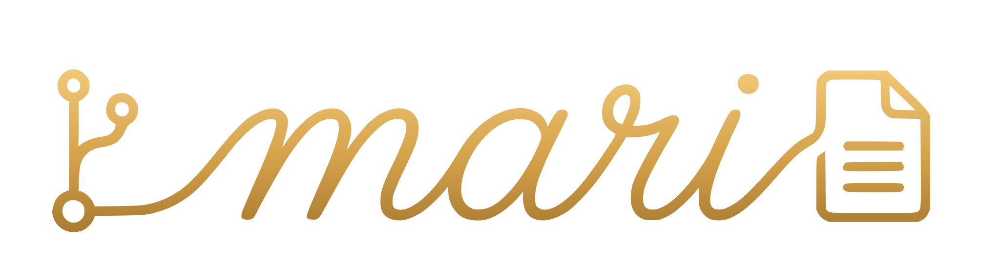

From pull request to doc, automated
Mari reviews every PR, drafts the docs it needs, and routes them to a human reviewer. Localized on the same sign-off. Live on the same merge.
Point Mari at the repos that matter.
Install the app on GitHub, GitLab, or Bitbucket. Tell Mari which repos to watch and where the docs live.
- acme/payments-api Watching
- acme/auth-service Watching
- acme-internal/billing-core Watching
- acme/legacy-bitbucket Paused
Read the diff, line by line.
Mari resolves the symbols, tests, comments, and existing docs each PR touches. The draft only references what actually changed.
Write the pages the change calls for.
Mari drafts the reference entries, code samples, and migration notes in your voice, against your style guide. MDX or Markdown.
Rotating refresh tokens
The RefreshTokenStore now exposes an async rotate() that issues a new token before revoking the old one. Pass opts.ttl to override the default lifetime.
Tokens are invalidated atomically. If issue() fails, the prior token remains valid.
Mari stops. You decide.
Nothing publishes without a sign-off. Diff on the left, draft on the right. Approve, request changes, or fix inline. Every edit returns to the same PR.
Rotating refresh tokens
rotate() is now async. It issues a new token before revoking the old one, atomically.
Publish, then translate.
Once approved, the docs deploy to your site. Translations queue behind the source and ship on the same commit.
Stay in step between releases.
Mari watches the repo between pull requests. When the code drifts from the docs, she opens a new PR. Never a silent change.
Let it run on your next PR.
“Doing beats saying.” Free for open source, two minutes to install.